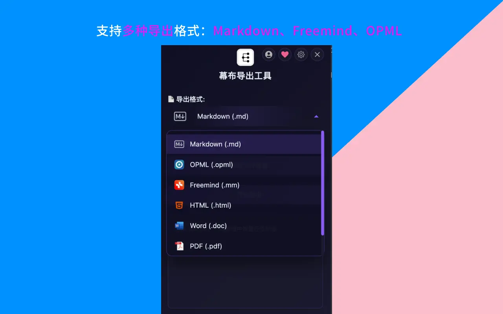

嗨，我是小麦。
前段时间准备把幕布笔记同步到 Typora 做本地编辑，搜了半天发现一个让人无语的事实：幕布不支持 Markdown 导出。一个支持 Markdown 语法编辑的工具，偏偏不能把内容导出为 .md 文件——这就像一家餐厅允许你自己带食材，却不让你打包剩菜。
折腾了两天后我终于找到了一个靠谱的批量方案，这篇文章把完整的思路和操作分享给有同样需求的朋友。
TL;DR：幕布官方不支持 Markdown 导出。使用 Mubu Exporter Chrome 插件，5 步操作即可将所有文档批量转为 .md 文件——实测 203 篇文档 5 分钟完成，大纲层级和备注内容零丢失。同时支持 OPML、HTML、JSON 等格式。
幕布官方到底支持哪些导出格式？
先帮大家梳理清楚现状。截至目前，幕布支持的导出格式有：
| 格式 | 是否支持 | 备注 |
|---|---|---|
| Word (.docx) | ✅ | 逐篇导出 |
| ✅ | 逐篇导出 | |
| 图片 (.png) | ✅ | 逐篇导出 |
| HTML | ✅ | 逐篇导出 |
| OPML | ✅ | 逐篇导出 |
| Freemind (.mm) | ✅ | 逐篇导出 |
| Markdown (.md) | ❌ | 不支持 |
| 批量导出 | ❌ | 不支持 |

所以如果你需要 Markdown 格式（用于 Obsidian、Typora、飞书、Notion 等工具），或者需要一次性导出多篇文档，官方是帮不了你的。
为什么 Markdown 格式这么重要？
可能有人会问：OPML 或者 Word 不行吗？为什么非得 Markdown？
因为 Markdown 是目前笔记工具之间的「通用语言」。据 GitHub 官方博客数据，GitHub 上超过 90% 的项目文档使用 Markdown 格式。想象一下：
- Obsidian——原生基于 .md 文件，拖进去就能用（详见幕布迁移 Obsidian 教程）
- Typora——最流行的 Markdown 编辑器
- Notion——支持直接导入 .md 文件
- 飞书文档——粘贴 Markdown 自动渲染
- GitHub/GitBook——标准文档格式
- Hugo/Hexo 博客——直接作为博文源文件
一份 .md 文件，几乎可以被所有现代知识工具打开和编辑。而 OPML 只有少数大纲工具认识，Word 则基于 Office Open XML 标准，会夹带大量格式元数据让你后续处理很头疼。
我试过哪些方案？各有什么问题？
方案A：OPML 导出后用工具转换
思路是先从幕布导出 OPML，再用 opml-to-markdown 这个 npm 工具转换。我试了三篇：
- 转换后的层级格式有问题——原本的三级缩进变成了扁平列表
- 幕布的「备注」功能内容全部丢失（OPML 格式不支持 note 字段）
- 一篇一篇导出 OPML 本身就很累，200 篇就是 200 次重复操作
结论：格式有损 + 无法批量 = 不可行。
方案B：浏览器开发者工具手动抓取
在 Network 面板里抓到了幕布的 API 请求格式，理论上可以自己写脚本调用。但光处理认证、分页、限流、格式转换就够折腾一天的。而且 API 随时可能改版，脚本就得重写。
结论：门槛太高，维护成本不可控。
方案C：Mubu Exporter Chrome 插件
最终让我满意的方案。这是一个开源的 Chrome 插件，核心功能就是批量把幕布文档导出为 Markdown（同时也支持 OPML、HTML、Freemind、JSON）。
具体怎么操作？5 步搞定
Step 1：安装插件
打开 Chrome 应用商店，搜索「幕布导出工具」或者直接访问插件页面。点击「添加到 Chrome」。
Step 2：确保幕布已登录
在浏览器里打开 mubu.com，确认你已经登录了账号。插件需要复用你的登录状态来获取文档数据。
Step 3：扫描文档列表
点击浏览器工具栏的插件图标，在弹出界面中点击「获取文件信息」。插件会自动递归扫描你所有的文件夹和文档。
我的账号扫描结果：203 篇文档，15 个文件夹，耗时不到 5 秒。
Step 4：选择格式并导出
在格式下拉菜单里选择「Markdown」，然后点击「开始导出」。

进度条会实时显示当前处理到第几篇。我的 203 篇文档总共跑了大约 5 分钟。
Step 5：查收导出文件
导出完成后，浏览器会自动下载一个 ZIP 压缩包。解压后你会看到所有的 .md 文件按照幕布的文件夹结构整齐排列。
导出的 Markdown 质量怎么样？
这是我最关心的部分。毕竟批量速度再快，如果格式乱七八糟那也没意义。
我仔细检查了一下，转换规则大致是这样的：
| 幕布元素 | Markdown 输出 |
|---|---|
| 一级节点 | - 内容（无序列表） |
| 二级节点 | - 内容（缩进无序列表） |
| 三级及更深 | 继续缩进，层级无限制 |
| 备注/笔记 | > 备注内容（引用块） |
| 加粗文字 | **加粗** |
| 高亮文字 | ==高亮== |
| 代码 | `代码` |
对我来说最重要的是备注内容没有丢失——这在其他导出方案里几乎都是个坑。Mubu Exporter 把备注转成了引用块，在 Obsidian 和 Typora 里渲染出来很清晰。
五种导出格式分别适合什么场景？
虽然我主要用 Markdown，但插件支持的五种格式各有适用场景，整理一下供参考：
| 格式 | 最适合 | 典型用途 |
|---|---|---|
| Markdown (.md) | Obsidian / Typora / Notion | 日常笔记迁移、博客写作 |
| OPML (.opml) | XMind / Logseq / WorkFlowy | 思维导图工具间互通 |
| Freemind (.mm) | FreeMind / MindManager | 传统思维导图软件 |
| HTML (.html) | 浏览器 / 归档 | 静态备份、分享给不用笔记工具的人 |
| JSON (.json) | 开发者 / 二次处理 | 自定义解析、数据分析、灾备 |
我自己的习惯是同时导出 Markdown 和 JSON 两份。Markdown 做日常使用，JSON 当终极备份——里面包含了所有原始数据，未来哪怕格式需求变了，也能从 JSON 重新生成。
有哪些常见问题需要注意？
导出过程中网络断了怎么办？
不用担心。插件有断点续传能力，重新打开点「重试」就行，不会从头开始。
能只导出部分文件夹吗？
可以。扫描出文档列表后，你可以选择只导出指定的文件夹。
导出会影响幕布上的原始数据吗？
完全不会。插件只是读取数据并转换格式，不会修改或删除你在幕布上的任何内容。
需要幕布会员吗？
不需要。插件使用你的登录状态来获取数据，跟会员等级无关。
写在最后
Markdown 是你笔记数据的最佳「保险箱格式」——它纯文本、通用、不绑定任何厂商。哪怕十年后你用的工具换了三轮，这些 .md 文件依然可以被任何文本编辑器打开。
如果你跟我一样，在幕布里积累了一堆内容却苦于导不出 Markdown，试试这个方案吧。五分钟的操作换来的是完全的数据自主权。如果你还在纠结用什么工具来管理这些导出的 Markdown 文件，可以参考我的大纲笔记工具横评。
相关链接：
- Mubu Exporter 插件：Chrome 应用商店
- 开源地址：GitHub